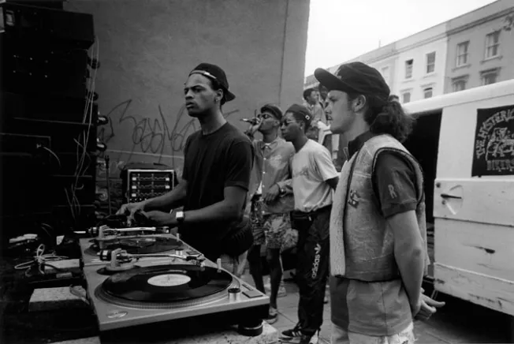

Trip Hop is a musical genre that started in Bristol, UK in the late 1980s. It blends slow hip-hop beats with jazz, electronica, and ambient genres and is generally seen as the downtempo cousin to these genres. Two major trip hop bands to come out of the Bristol scene were Massive Attack and Portishead.

Trip Hop pioneer Tricky, from Bristol, UK, of Massive Attack fame was interviewed by filmmaker Steve McQueen, notable for his academy award-winning "12 Years a Slave." He also created film series "Small Axe," which focuses on the experiences of West Indian immigrants to the UK. In this interview, Tricky discusses some of his major influences, such as Bob Marley and Prince, as well as his creative process.